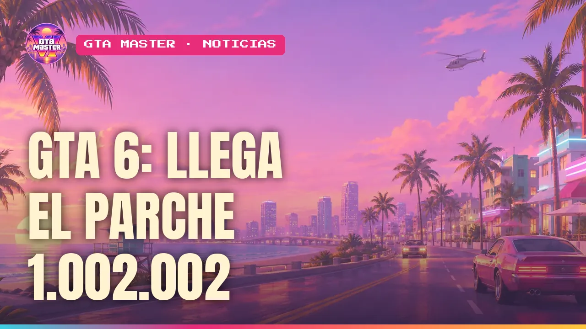

GTA 6 actualización 1.002.002: las 7 correcciones del parche y cuánto ocupa

GTA 6 actualización 1.002.002: Rockstar arregla cuelgues, autoguardado, llamadas de misión y nivel de búsqueda. Lo que ocupa y si afecta al glitch.
Rockstar ya ha publicado la actualización 1.002.002 de GTA 6 para PS5 y Xbox Series X|S, y llega con siete correcciones. Arregla cuelgues, el autoguardado que fallaba, las llamadas de teléfono que no saltaban (y bloqueaban misiones) y el nivel de búsqueda que no había forma de quitarse de encima.
El parche empezó a desplegarse el lunes 23 de noviembre, apenas cuatro días después del lanzamiento. Según Game Rant, las notas proceden de la web de soporte de Rockstar, y Vandal lo resume así: «un parche destinado, principalmente, a solucionar bugs». No trae contenido nuevo, pero sí arregla varios de los fallos que más han protestado los jugadores esta primera semana.
¿Qué arregla la actualización 1.002.002 de GTA 6?
Estas son las siete correcciones que recogen Game Rant, iPhone in Canada y GamerHeadlines a partir de las notas oficiales:
| Problema | Qué hace el parche |
|---|---|
| Cuelgues del juego | Corrige varios fallos que cerraban la partida |
| Clima congelado | El tiempo vuelve a cambiar con normalidad |
| Autoguardado | Las partidas se guardan solas correctamente |
| Llamadas de teléfono | Saltan las llamadas que hacen avanzar la historia y desbloquean misiones |
| Nivel de búsqueda | Ya se puede perder a la policía como es debido |
| Gimnasio | La barra de peso muerto vuelve a poder usarse |
| Bolsas del botín | Los compañeros vuelven a entregar las bolsas para venderlas al perista |
La más importante para la mayoría es la de las llamadas. Si te habías quedado atascado esperando un telefonazo que nunca llegaba, ese era el fallo: según Game Rant, afectaba también a llamadas necesarias para desbloquear misiones de la historia. Le sigue de cerca el autoguardado: con él roto, un cuelgue podía costarte un buen rato de progreso.
¿Cuánto ocupa el parche de GTA 6 en PS5 y Xbox?
Es una descarga pequeña para lo que pesa el juego:
- PS5: unos 603 MB (603,7 MB según Game Rant; Vandal da la misma cifra redondeada a partir de PlayStation Game Size).
- Xbox Series X|S: unos 1,6 GB, según Game Rant.
Rockstar no publica el tamaño; son mediciones de terceros. El despliegue, además, fue escalonado: Vandal explicaba, citando a PlayStation Game Size, que al principio solo un tercio de los jugadores podía descargarlo y que el resto lo recibiría en las horas siguientes. Si todavía no te aparece, ve a la ficha del juego en la consola y busca actualizaciones a mano.
¿Mejora el rendimiento o los gráficos?
No. Tanto iPhone in Canada como GamerHeadlines señalan que las notas no incluyen cambios de rendimiento, de tasa de imágenes por segundo ni de gráficos, y tampoco ajustes de equilibrio. Si esperabas un modo de 60 FPS en consola, toca seguir esperando. Te contamos lo que se sabe de cómo rinde el juego en la sección de rendimiento de nuestra guía de GTA 6.
¿Han parcheado el glitch de dinero de GTA 6?
Las notas oficiales no hablan de ningún glitch de dinero. En las primeras horas del despliegue, PlayStation LifeStyle recogía que había jugadores asegurando que el truco de dinero seguía funcionando, aunque es un testimonio de usuarios y no una confirmación.
Eso sí, hay un detalle que conviene vigilar: una de las correcciones toca justo la entrega de bolsas para vender al perista. Ni Rockstar ni los medios la relacionan con ningún glitch, así que no hay nada que diga que el método haya dejado de funcionar. Si lo usas, lo tienes explicado paso a paso en nuestro vídeo:
Y si prefieres ganar dinero sin trucos, repasa los trucos y consejos de nuestra guía o la ficha del vídeo Perista de GTA 6: almacén de Brian.
¿Hay noticias de GTA 6 en PC o del modo online?
Tampoco. Game Rant indica que Rockstar no ha comentado nada sobre la versión de PC ni sobre la parte online, y Vandal recuerda que la compañía todavía no ha anunciado oficialmente GTA 6 para PC. Ojo con las supuestas descargas para ordenador: ya te avisamos de la página falsa de GTA 6 en Steam.
Qué significa para el jugador
Es el típico parche de primera semana: no cambia el juego, pero lo hace más fiable. Nuestra recomendación:
- Actualiza antes de seguir la historia, sobre todo si tenías una misión bloqueada por una llamada.
- Guarda a mano en un piso franco tras instalarlo, para comprobar que el autoguardado vuelve a ir bien.
- No te fíes de los rumores de parches que «arreglan el glitch» hasta que haya notas que lo digan.
Si juegas en Xbox, no olvides revisar también el ajuste de capturas que está provocando suspensiones, y en PS5, que tengas instalada la actualización del sistema obligatoria para GTA 6.
Para recordar por qué merece la pena tener Leonida a punto, aquí va el tráiler de lanzamiento oficial de Rockstar:
Seguiremos atentos a la página de soporte de Rockstar: en cuanto llegue el siguiente parche, te contamos qué cambia.


Comentarios
Los comentarios funcionan con Disqus: puedes entrar con Google, Facebook, X o tu email. Al pulsar el botón se conecta con Disqus, que usa sus propias cookies. Más información en nuestra política de privacidad.